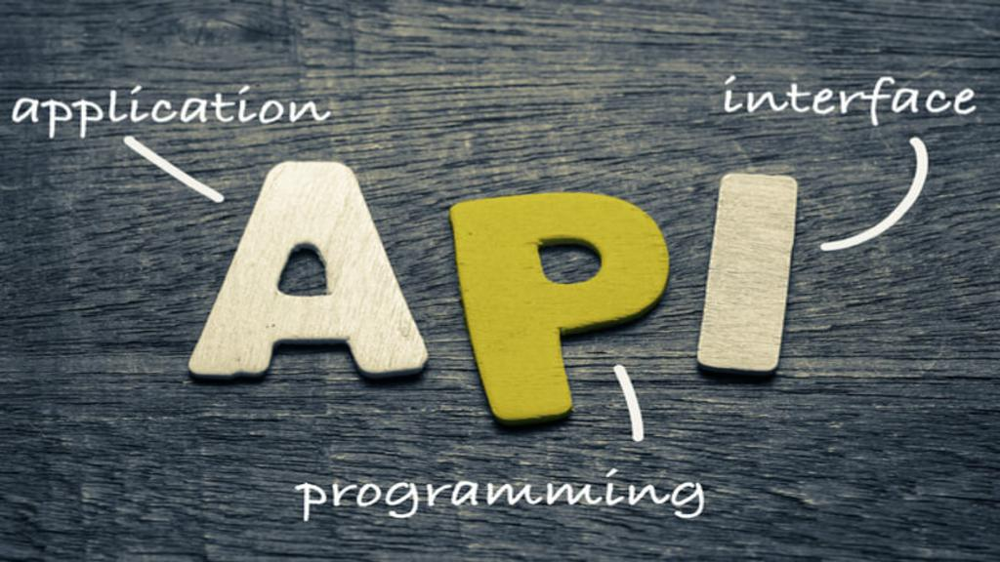

API : An Introduction
October 28,2020 API is a regular term used widely in field of web development. But many people don't have any , or have a vague idea about APIs. In this blog post, we will be seeing what exactly are APIs and their significance.
What exactly are APIs?
Well, APIs stand for Application Programming Interfaces, which allow applications to communicate with one another. Making it simple, API allows one piece of code to talk to another.
Let me give you an example.
You are developing a web based application, lets say, using PHP. You want to integrate Facebook Login in your application. Here, we want a communication between two different platforms, one is your web application written in PHP and other is Facebook Login Feature build in whatever technology/language. In such situations, we simply get our job done by using APIs provided Facebook.
Thus, API acts as a messenger that takes requests from client and returns response from server. Don't get yourself confused here. API is not itself a server. It simply is a messenger or communicator or interface. Request is done by sending an HTTP request to a server.

API is an interface between client and server applications
How API allows communication between two different platforms?
One of the arguments that is put forward to answer this question is that, API deals with universal data formats like JSON and XML, recognized by all platforms. That is to say, data returned by API is in JSON or XML formats. Since, XMLs are difficult to work with, JSON is preferred.
The classic 'Waiter' example
Suppose, you are in a restaurant. You ordered the waiter some food, and then the waiter brought you the food from the kitchen.
Taking the analogy here:
- You are the client.
- Kitchen is the server.
- Food is the service you are requesting for.
- Waiter is the API.
Conclusion:
API is the interface or communicator which allows the communication between different platforms. In web development, API often refers to the way in which we retrieve information from an online server. API is a messenger which carries request from client application and brings response from server application.
More From This Blog
Mail Sender in Java
Posted on: October 16, 2019
Java provides Mailer APIs for sending and receiving emails via Java Application using any mail servers. In this blog post Read more....
Why Constructors in C++
Posted on: July 14, 2019
Have you ever wondered, why constructors are so important in object oriented languages ? Do you, actually know when Read more....
Rest API With Spring Boot
Posted on: August 24, 2019
REST, stands for Representational State Transfer, which is an architectural style to develop APIs. REST API is an Read more....
Git : Get Started With
Posted on: September 18, 2019
GIT has been established as a popular and a must-know tool for developers in recent time. Basically, Git is a Read more....
Java Best Practices
Posted on: July 7, 2019
Programming is not just about writing code. It is about writing Clean, Maintainable, Non-Fragile Code and Read more....
Constructors in C++
Posted on: July 9, 2019
Constructors are the special type of member functions that have same name as that of the class. So, if constructors are Read more....